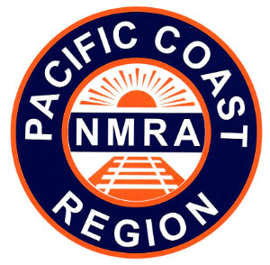

PCR Layout Design & Operations
Weekend Meet
February 5 - 7, 2027
Mastick Senior Center
1155 Santa Clara Ave.
Alameda CA 94501
and online via Zoom
|
 |
Welcome to the 2027 PCR Layout Design & Operations Meet! This will be our 34th annual meet!
The PCR Layout Design and Operations meet is a model railroading event for modelers interested in model railroad design, model railroad operations, railroad and local history, or any related topic.
What is the event?
This year's event is a mix of clinics and talks, in-person events, and operating sessions at model railroads in the Oakland-Alameda area.
This is intended to be an interactive event. You'll be able to participate in:
When?
Friday, February 5 - Sunday, February 7, 2027
A rail tour will be on Friday afternoon, with a group dinner on Friday night. Presentations and consultations are on Saturday. Layout tours are on Saturday night. Operating sessions are on Sunday.
Where?
The 2027 meet will be a hybrid event. You can attend Saturday clinics in-person at the Mastick Senior Center in Alameda, or you can partipate in the clinics via Zoom. Recordings of the clinics will be available to all registered attendees after the event.
How much?
Details on tickets will be posted closer to the event.
Who can attend?
This meet is open to ALL model railroaders, regardless of club affiliation or membership. NMRA, PCR, or LDSIG membership is NOT required!
More details?
Read more:
Got questions not answered by this page? Contact the organizers at contact@bayldops.com.